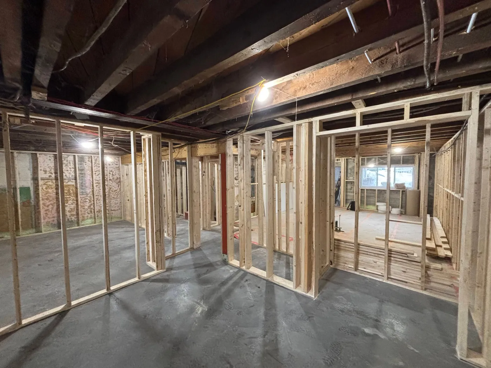

Rénovation après sinistre à Montréal et Laval
Dégât d'eau, refoulement d'égout, infiltration, incendie ou tempête : Stratimo reconstruit votre propriété après un sinistre. Nous évaluons les dommages, vous remettons une soumission détaillée à présenter à votre assureur et coordonnons tous les corps de métier jusqu'à la remise en état.

Ce que nous remettons
en état.
Dégât d'eau et refoulement
Retrait des matériaux mouillés, puis reconstruction : gypse, isolant, planchers, armoires et finitions.
Infiltration par la fondation
Si l'eau est entrée par une fissure ou un drain français bouché, on règle la source avant de refaire le sous-sol.
Voir la réparation de fissuresIncendie et fumée
Reconstruction des pièces touchées : charpente, gypse, électricité et plomberie par des sous-traitants licenciés, puis finitions.
Tempête et dommages extérieurs
Toiture, revêtement, portes et fenêtres endommagés par le vent, le verglas ou une chute d'arbre.
Soumission pour l'assureur
Une soumission détaillée, poste par poste, que vous pouvez remettre à votre assureur ou à l'expert en sinistre.
Un seul interlocuteur
Nous coordonnons l'échéancier, les sous-traitants et les inspections, de la démolition jusqu'aux finitions.
Quatre étapes. Zéro surprise.
-
01
Contact
Décrivez les dommages par téléphone ou formulaire. Réponse le jour même.
-
02
Évaluation
Visite des lieux, photos et relevé des dommages, pièce par pièce.
-
03
Soumission
Un devis détaillé, poste par poste, à présenter à votre assureur.
-
04
Reconstruction
Travaux coordonnés de la démolition aux finitions, dans les délais convenus.
Après sinistre
près de chez vous.
Montréal
Réparation après sinistre à Montréal, notamment à Anjou, Westmount, Ahuntsic et Rosemont : maisons, plex et condos.
Laval
Remise en état après un dégât d'eau, un refoulement ou un incendie à Laval : Chomedey, Pont-Viau, Fabreville, Sainte-Rose et partout ailleurs.
Rive-Nord
Reconstruction après sinistre sur toute la Rive-Nord : Terrebonne, Mascouche, Repentigny, Blainville, Boisbriand, Sainte-Thérèse, Rosemère, Lorraine, Bois-des-Filion, Sainte-Anne-des-Plaines, Mirabel, Saint-Eustache, Deux-Montagnes et Saint-Jérôme.
Avant de vous décider
lisez nos conseils.
Avant de
commencer.
Que faire juste après un dégât d'eau ?
Coupez l'arrivée d'eau si possible, coupez l'électricité des pièces touchées si vous pouvez le faire sans danger, prenez des photos et appelez votre assureur. Retirez ce qui peut l'être pour limiter les dommages. Nous évaluons ensuite les travaux de reconstruction.
Travaillez-vous avec les assureurs ?
Nous vous remettons une soumission détaillée, poste par poste, que vous pouvez transmettre à votre assureur ou à son expert en sinistre. Vérifiez auprès de votre assureur les étapes à suivre pour votre réclamation.
Pourquoi régler la cause d'une infiltration avant de reconstruire ?
Refaire un sous-sol sans réparer la fissure ou le drain français qui a laissé entrer l'eau, c'est risquer de tout recommencer au prochain orage. Nous réparons la source avant de reconstruire.
Combien de temps durent les travaux ?
Cela dépend de l'ampleur des dommages : quelques jours pour une pièce, plusieurs semaines pour un sous-sol complet ou après un incendie. L'échéancier est indiqué dans la soumission.
Coordonnez-vous tous les corps de métier ?
Oui. Comme entrepreneur général, nous coordonnons l'ensemble des sous-traitants, l'échéancier et le budget. Vous n'avez qu'un seul interlocuteur.
Êtes-vous licencié et assuré ?
Oui. Stratimo Construction détient la licence d'entrepreneur général RBQ 5875-3856-01 et une assurance responsabilité civile qui couvre chaque chantier.
La soumission est-elle gratuite ?
Oui. La soumission est gratuite et sans engagement, et chaque demande reçoit une réponse le jour même, au plus tard dans les 24 heures.
Parlons de votre projet.
Soumission gratuite, sans engagement. On prend le temps de bien comprendre votre projet avant de vous proposer quoi que ce soit.
- Téléphone
- (514) 433-3280
- Courriel
- infostratimo@gmail.com
- Licence RBQ
- 5875-3856-01
- Zone de service
- Grand Montréal et environs